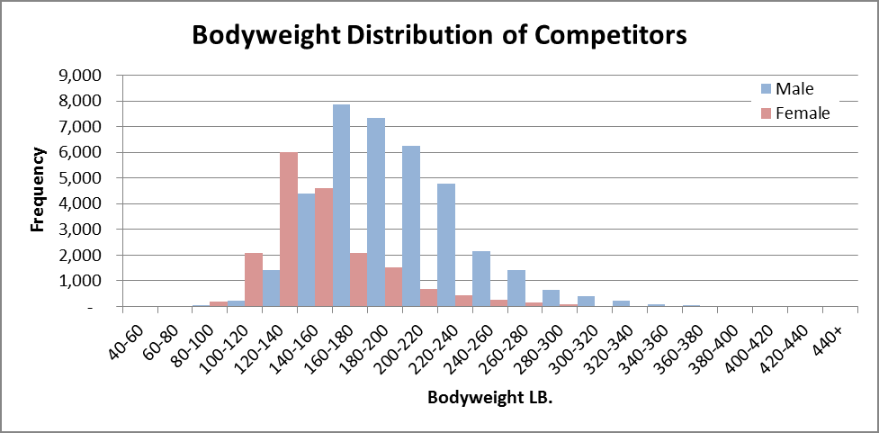
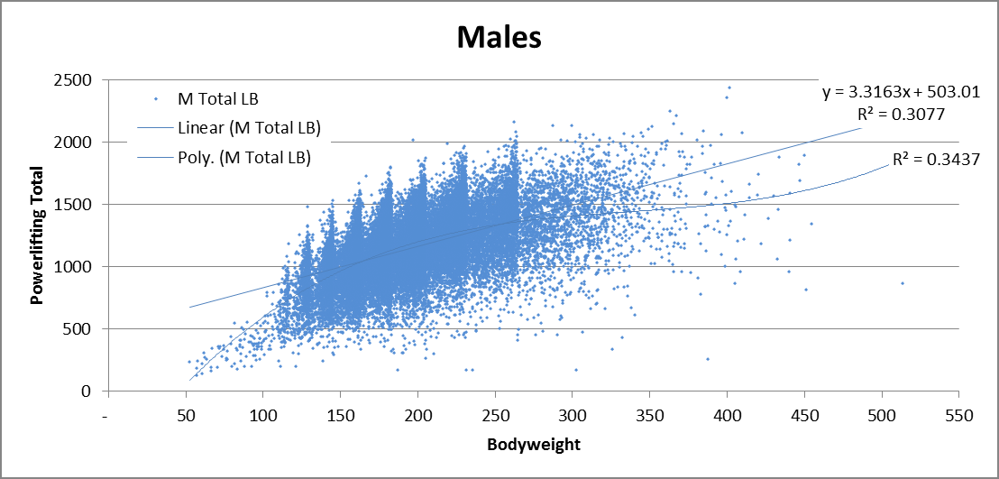
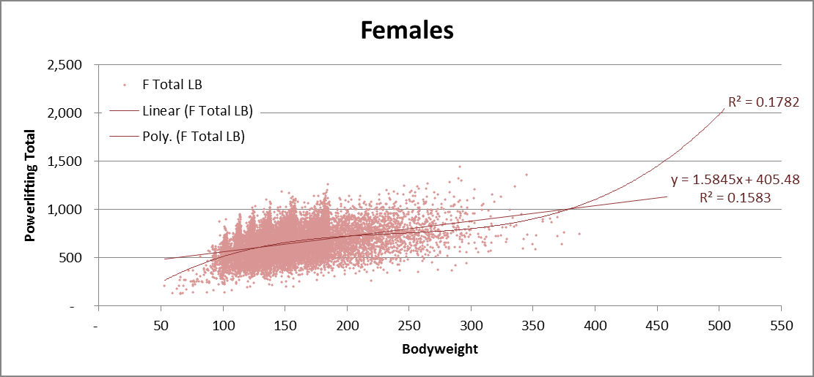

A Better Wilks Formula
May 23, 2018
The Wilks Formula is by far the most popular standard of comparison for strength across different weight classes and genders in powerlifting. However, the formula is skewed in favor of super-heavy and super-light lifters. Several prominent figures in the powerlifting community have been voicing their concerns about Wilks, including Greg Nuckols in his article Who’s The Most Impressive Powerlifter?, and Ben Pollack, who commented:
Wilks is, in my opinion, the #1 most unfair thing about modern powerlifting. Notice how there’s no guys on that list (referring to a subset of Greatest Wilks Scores) under 275? There’s a reason for that: Wilks is bullshit and heavily favors heavier lifters. Steve Denison said he’d consider a different metric for the USPA (2nd largest powerlifting federation in the USA) next year and I really hope he follows through on that. [1]
Robert Wilks and the International Powerlifting Federation (IPF, largest powerlifting federation) have said that they are working on a new formula. However, they have been taking too long. Fortunately, I have already found a solution.
This essay will first examine the Wilks Formula bias, and then propose a better formula.
How Biased is the Wilks Formula?
Below are the all-time top 10 Wilks coefficient scores for raw lifters based on performances at drug-tested meets. [2] [3] [4] Extreme bodyweights are in red.
| Name | Sex | Bodyweight (lb) | Total (lb) | Wilks |
|---|---|---|---|---|
| Ray Williams | M | 402 | 2,436 | 594 |
| Jesse Norris | M | 197 | 2,015 | 586 |
| Sergey Fedosienko | M | 129 | 1,477 | 585 |
| Jezza Uepa | M | 400 | 2,359 | 575 |
| Dennis Cornelius | M | 262 | 2,157 | 564 |
| Heather Connor | F | 97 | 876 | 559 |
| Kelly Branton | M | 363 | 2,249 | 557 |
| Taylor Atwood | M | 167 | 1,725 | 554 |
| Wei-Ling Chen | F | 103 | 898 | 552 |
| Kimberly Walford | F | 148 | 1,182 | 550 |
The #1 lifter, Ray Williams, weighs 402 lb and the #3 lifter, Sergey Fedosienko, is 4’9. Both of these lifters are in classes where there is far less competition, and they are #1 and #3 in the world!
Below is the distribution of bodyweights for competitive lifters at raw drug-tested meets. The bars for the 6 highlighted bodyweights above are very small to practically invisible.

There were only 15 male competitors in the 400–420 lb range where Ray is. In contrast, the 160–180 lb weight range for men hosts the most competitors at 7,871. So a 400 lb man with the best performance out of 15 is equivalent to a 160 lb man with the best performance out of 7,871 according to the Wilks Formula.
Another problem with Wilks is that it gets pretty screwy once the bodyweight gets over 600 lb. A 623 lb man lifting 100 lb will crush all-time records with a 1,400 Wilks score. But he better not weigh in at 624 lb, because then he will receive a Wilks of -282,679. Nobody has yet taken advantage of this in competition, but people weighing over 600 lb certainly exist and they may take advantage of this in the future.
The cause of these problems is that the formula is modeled on only a handful of elite athletes (those in the IPF from 1987 to 1994), and with such a small sample size, the model is prone to bias.
Existing Alternatives
The simplest and crudest measure of relative strength is the bodyweight multiple, but this measure (total/bodyweight) is skewed in favor of lighter lifters to the point that it’s much worse than Wilks. For example, Lamar Gant deadlifted 661 lb at 132 lb for a 5x multiple, while Eddie Hall – who is arguably the greatest deadlifter of all-time – deadlifted 1102 lb at 440 lb for a 2.5x multiple.
Other alternatives to the Wilks Formula include the Glossbrenner coefficient, Reshel coefficient, NASA coefficient, Schwartz/Malone coefficient and Siff coefficient. However, most of these formulas still use the same approach as Wilks, just calibrated on different data sets, so they maintain many of the same problems as the Wilks and are therefore seldom used.
Greg Nuckols wrote an excellent article with suggestions such as allometric scaling. However, Greg admits that allometric scaling is still problematic at very high bodyweights.
A Better Formula for Relative Strength
The most impressive lifter is the athlete who most drastically outperforms the competition. So if lifter A wins the 140 lb class with a 1,500 lb total versus a 1,000 lb average, and lifter B wins the 250 lb class with a 1,700 lb total versus a 1,600 lb average, then lifter A should win best lifter over lifter B because lifter A was more dominant in their weight class.
How do we convert this relationship into a math formula? By calculating which athlete scored the most standard deviations above the mean relative to their bodyweight (i.e. compare z-scores).
On to the Math
Let’s first plot powerlifting totals by bodyweight to get a sense of the shape of the distribution. I also performed a linear regression and 3rd degree fitted polynomial by gender. I tried higher degree polynomials too, but they looked ridiculous because the curve tried too hard to fit the super heavy weights even though there’s not much data there.
You may be thinking, isn’t the problem with Wilks that it’s a fitted polynomial? So why am I trying to fit the distribution to a polynomial? The difference is that the Wilks formula cropped out only the elite performers and fitted a polynomial around them ignoring the rest of the distribution (non-elites). The method I am using fits a polynomial around the averages, and then takes into account the dispersion around the average.
After examining the linear regression compared to the polynomial, we end up using the linear regression anyways. The linear model fits the middle weight just as well, but fits the heavy weights better when compared to the polynomial. The polynomial has a big advantage in modeling super-light weights, but I examined those data points and a large majority of super-light weight lifters are children, explaining the dip in performance.


You may raise another valid concern: wouldn’t the performances of heavier lifters vary more than lighter lifters since they lift more total weight? That is, do the performances of heavier lifters have higher SD than those of lighter lifters? I calculated the SD for 50 lb segments from 100–400 lb for men, and it turns out that the SD is very consistent.
I used 50 lb segments instead of weight classes because weight class ranges vary, which would cause higher SD in weight classes with wider ranges in bodyweights.
Males
| Bodyweight (lb) | SD (lb) |
|---|---|
| 100-150 | 247 |
| 150-200 | 251 |
| 200-250 | 251 |
| 250-300 | 251 |
| 300-350 | 249 |
| 350-400 | 249 |
I then did the same analysis for women 100–300 lb and got a peculiar result. The SD for women clearly increases as bodyweight increases. I have no clue why, but I did play around with different models and got very consistent SD across bodyweights after switching to percent lifted relative to the mean, instead of total lifted. I only did this for women since doing this for men would mess up their SD. So the male and female strength formulas are fundamentally quite different.
Females
| Bodyweight (lb) | SD (lb) | SD of %Δ (lb) |
|---|---|---|
| 100-150 | 120 | 19% |
| 150-200 | 135 | 20% |
| 200-250 | 156 | 20% |
| 250-300 | 177 | 21% |
One more adjustment. I added 3.5 to everyone’s scores and then multiplied scores by 100 making the new average score 350 instead of 0. I picked 3.5 and 100 because a 150 lb man lifting 1,000 pounds is roughly average in my model and also has a Wilks of ~350. I am not trying to perfectly scale my formula to the Wilks, but I figured it would be easier for people to adjust to a new formula with roughly similar ranges. Also, to be nice, I didn’t want to give half the population negative strength scores.
The Formula
All units are in pounds. A score of 350 is average for the specified bodyweight. One SD is 100.
Males: 0.397958 * Total – 1.31975 * BW + 149.823
Females: (316.111 * Total)/(BW + 255.911) – 150.865
Calculator and Percentile
Feel free to play around with the calculator below. It also calculates a rough percentile relative to the best performances of other drug-tested raw athletes. [5]
Top 10 Powerlifters by Gender Using the Peidi Formula (Raw, Drug-Tested)
MALES
| Name | Peidi Score | Wilks | Wilks Rank (Men Only) | BW LB | Total LB |
|---|---|---|---|---|---|
| Jesse Norris | 692 | 586 | 2 | 197 | 2,015 |
| Dennis Cornelius | 662 | 564 | 5 | 262 | 2,157 |
| Krzysztof Wierzbicki | 650 | 549 | 8 | 220 | 1,985 |
| Hifon Smith | 631 | 544 | 14 | 263 | 2,082 |
| Bryce Lewis | 627 | 533 | 22 | 230 | 1,962 |
| Garrett Blevins | 623 | 530 | 25 | 230 | 1,952 |
| Brett Gibbs | 623 | 544 | 13 | 183 | 1,795 |
| Mikhaylo Bulanyy | 623 | 532 | 23 | 205 | 1,868 |
| John Haack | 622 | 543 | 15 | 183 | 1,792 |
| Ashton Rouska | 622 | 533 | 18 | 201 | 1,852 |
FEMALES
| Name | Peidi Score | Wilks | Wilks Rank (Women Only) | BW LB | Total LB |
|---|---|---|---|---|---|
| Kimberly Walford | 775 | 550 | 3 | 148 | 1,182 |
| Daniella Melo | 755 | 511 | 20 | 185 | 1,262 |
| Ana Rosa Castellain | 753 | 530 | 10 | 153 | 1,171 |
| Jennifer Thompson | 740 | 548 | 4 | 135 | 1,101 |
| Isabella von Weissenberg | 716 | 505 | 25 | 156 | 1,130 |
| Samantha Calhoun | 712 | 526 | 11 | 138 | 1,075 |
| Sara Cowan | 708 | 485 | 51 | 184 | 1,196 |
| Evgeniya Goncharova | 708 | 502 | 28 | 156 | 1,118 |
| Maria Htee | 703 | 542 | 6 | 126 | 1,033 |
| Maria Dubenskaya | 698 | 517 | 15 | 139 | 1,060 |
You may have some objections to the rankings above, which I will address.
1) Elite women overwhelmingly out-score elite men
After examining the data in detail, I have to recommend comparing men’s scores and women’s scores separately. The female distribution has a statistically significant positive skew while the male distribution has close to no skew. This positive skew means that the female distribution has a fatter tail at the elite end. Male and female scores just cannot be compared because the overall distribution shapes are different.
The higher elite female scores cannot be fixed with a simple scaling factor, since adjusting the scores of elite athletes would also incorrectly adjust the scores of average athletes.
2) Higher representation of heavy-middle weights and lower representation of light and super-heavy weights compared to Wilks
I believe that this is fine and not an error with the model. First of all, this model calculates out-performance relative to the mean, so you should expect the top 10 elites to be composed of more athletes from larger weight classes (middle weights) – if you take the top 99.9th percentile of each weight class, there will be more athletes from the larger weight classes.
This is in contrast to the Wilks formula which attempts to give the same score among elites of different weight classes regardless of the size of those weight classes.
But the largest weight classes are middle weights, so why are the elite athletes according to the Peidi Formula skewed towards heavy weights? Well, this sort of makes sense, since elite athletes generally have much more muscle mass than average athletes, which causes them to gravitate towards higher weight classes. Note that among trained athletes, muscle mass accounts for 60-65% of the variability in strength. [6] This would also explain the lower representation of light weights, since they are limited in the amount of muscle they can have, which limits their degree of out-performance relative to the mean.
Areas for Improvement
The main area for improvement is that male and female scores are not comparable. I don’t know a good way to fix this. As stated earlier, it’s not as simple as applying a multiple, because the shapes of the distributions are different, so if I make an adjustment to the elites, then the scores of all the non-elite men and women can no longer be compared.
I built my model using only competition data from raw, drug-tested meets without wraps. That’s not to say that my model would be invalid for non-drug tested results and wraps, I would need to do further analysis to confirm.
Raw Data Used
Thanks to openpowerlifting.org for making the data freely available.
A csv of the data used can be downloaded here.
Notes
[1] Ben Pollack’s comments about the Wilks Formula: https://www.reddit.com/r/powerlifting/comments/74r14f/greatest_wilks_scores/do0ksv5/?context=3 ↩
[2] Source: Openpowerlifting.org. Extract date 5/13/2018. Parameters: Raw, All Classes, All Drug-Tested Feds, All Years, All Sexes. ↩
[3] In powerlifting, “raw” means lifting with minimal supportive equipment (no wraps). Various elastic suits and materials are permitted in “equipped” powerlifting divisions where much heavier weights are lifted. ↩
[4] Weight classes range from 130–265+ lb for men and 104-185+ lb for women for the majority of meet performances in the data pulled. ↩
[5] The percentile calculation uses the z-score and assumes a Gaussian distribution. The actual distribution is known to have fatter tails for both genders and a right skew for females. ↩
[6] Inter-individual variability in the adaptation of human muscle specific tension to progressive resistance training https://link.springer.com/article/10.1007%2Fs00421-010-1601-9 ↩